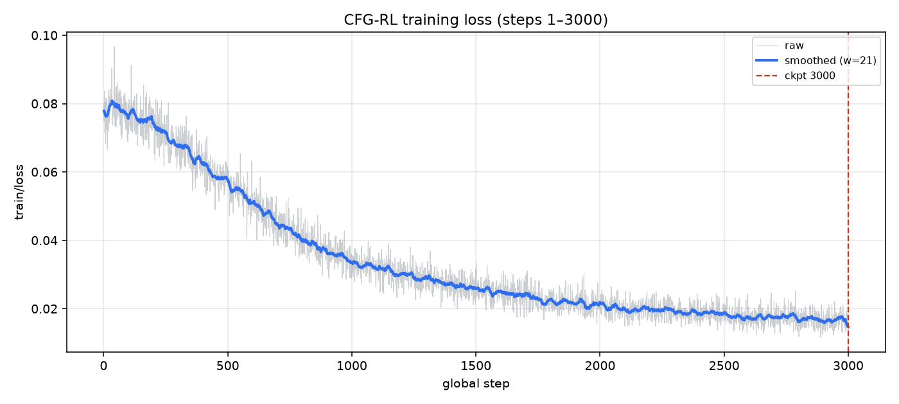
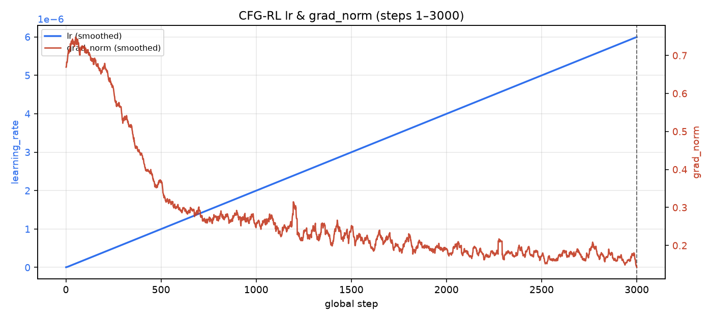
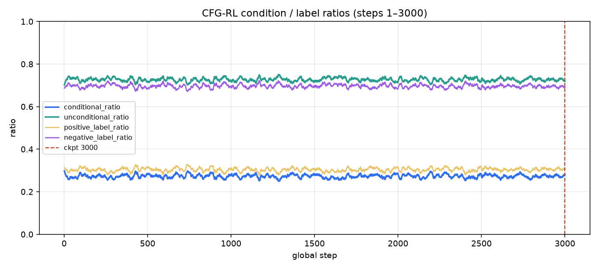
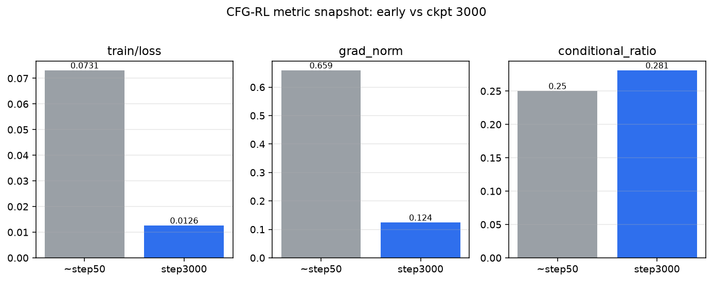
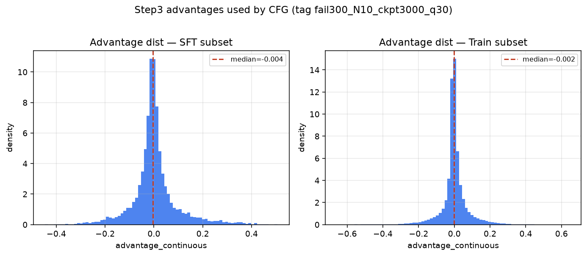

global_step_3000 相关评测图来源：训练日志 steps 1–3000 + Step3 advantages（tag fail300_N10_ckpt3000_q30）。
当前 4 卡正被 Step4 占用，未做 Libero 在线成功率 rollout（会与训练抢 GPU）。
ckpt 3000 时：loss=0.0126, lr=6e-06, grad_norm=0.124, cond=0.281, pos_label=0.312




